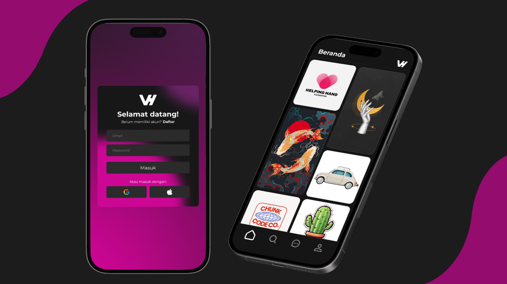

Project Photo

Project Description
VISHIRE is a platform-based mobile application developed as part of a User Experience course assignment, designed to provide a wide range of design services in a practical, well-structured, and easily accessible format for mobile users. The application was inspired by an idea I proposed, emphasizing the need for a centralized platform that integrates various design services into a single interface with a clear and visually appealing design, which was further refined through collaborative team discussions and planning. VISHIRE adopts a modern visual approach featuring a dark interface with contrasting color accents to convey a professional and creative impression while enhancing user focus on key content. The UI/UX was systematically designed from the login page to the homepage, where design services are presented in a structured visual grid to support intuitive navigation and efficient user interaction. Developed collaboratively with clearly defined roles, I was responsible for the UI/UX design aspects, including layout structuring, color and typography selection, and maintaining visual consistency in alignment with the application’s overall concept and objectives.
Project Reflection
The VISHIRE project involved the design of a mobile application UI/UX for a platform that provides various design services, developed as part of the User Experience course. In this project, I took on the role of the initial idea initiator as well as one of the UI/UX designers. The concept originated from the need for a centralized mobile platform that could integrate multiple design services into a single, accessible application. The project was carried out collaboratively through conceptual discussions and interface planning, with my primary responsibility focused on UI/UX design using Figma for layout structuring and user flow design, and Adobe Photoshop for visual refinement and supporting design assets.
This project provided meaningful insight into the strategic role of UI/UX design in shaping users’ perceptions of a digital service platform’s quality and professionalism. As the source of the initial idea, I learned the importance of translating abstract concepts into concrete design solutions that could be clearly communicated to the team. Although the design did not undergo revisions from lecturers or team members, the process reinforced my responsibility to maintain visual consistency, clear information hierarchy, and smooth interaction flow. The experience also highlighted that idea leadership in a design project extends beyond proposing concepts to sustaining a coherent design vision aligned with both user needs and academic objectives.
Moving forward, I plan to further develop my UI/UX competencies, particularly in usability testing and user experience evaluation to strengthen the effectiveness of future designs. I also aim to deepen my technical proficiency in Figma and Adobe Photoshop to produce interfaces that are not only visually compelling but also functionally validated. The VISHIRE project serves as a foundational experience that encourages me to take a more active leadership role in ideation and UI/UX design in future academic and professional projects, especially within user-centered digital service platforms.
Tools Used